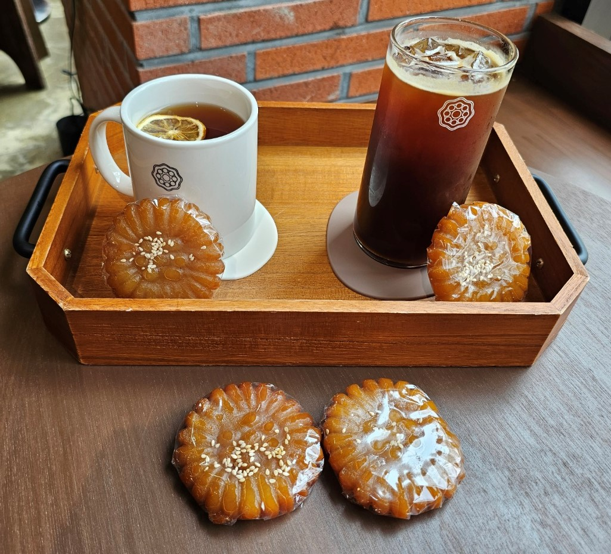

약과 + 커피
달콤바삭한 약과와 쓴 커피의 한국식 티타임 조합입니다. 카페 대신 편의점에서 바로 즐길 수 있습니다.
살 것 (제품명 참고)
약과(개별포장 또는 미니약과) · 아이스/핫 아메리카노 또는 라떼 · 선택: 티슈
즐기는 방법
1. 약과 포장을 열고 한입 크기로 준비합니다. 부서지기 쉬우니 봉지를 조심히 여세요.
2. 커피를 한 모금 마신 뒤 약과를 먹거나, 약과를 먼저 먹고 커피로 입안을 정리합니다.
3. 더 달콤하게 먹고 싶다면 라떼, 깔끔하게 먹고 싶다면 아메리카노가 잘 맞습니다.
팁
약과는 기름·설탕이 있어 보관에 민감합니다. 유통기한을 확인하고, 더운 날에는 빨리 드세요.
달콤바삭한 약과와 쓴 커피의 한국식 티타임 조합입니다. 카페 대신 편의점에서 바로 즐길 수 있습니다.
살 것 (제품명 참고)
약과(개별포장 또는 미니약과) · 아이스/핫 아메리카노 또는 라떼 · 선택: 티슈
즐기는 방법
- 약과 포장을 열고 한입 크기로 준비합니다. 부서지기 쉬우니 봉지를 조심히 여세요.
- 커피를 한 모금 마신 뒤 약과를 먹거나, 약과를 먼저 먹고 커피로 입안을 정리합니다.
- 더 달콤하게 먹고 싶다면 라떼, 깔끔하게 먹고 싶다면 아메리카노가 잘 맞습니다.
팁
약과는 기름·설탕이 있어 보관에 민감합니다. 유통기한을 확인하고, 더운 날에는 빨리 드세요.